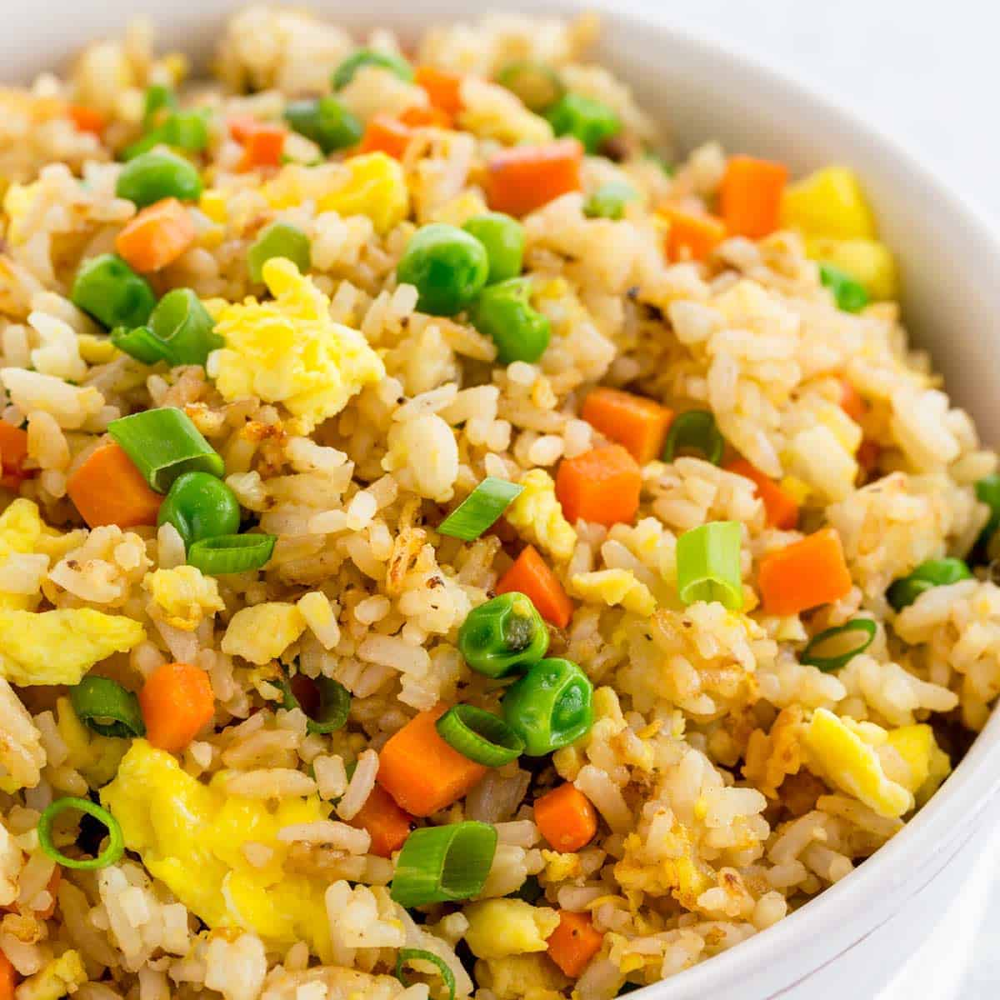

How to make the Perfect Fried Rice Dish!

Description
This recipe provides detailed instructions to make the perfect straight out of the wok
fried rice! Fried rice is a common Asian dish made with rice and an assortment of vegetables.
It is easy to prepare and quick to make!
Ingredients
-
rice
-
chopped carrots
-
peas
-
chopped spring onions
-
light soy sauce
-
salt
-
pepper
-
vegetable oil
Steps
-
Fry the rice by lightly browning in a pan or wok.
-
Stir-fry the onions, garlic, and carrots until tender.
-
Make a large well in the center of the pan with the rice.
-
Pour in the whisked eggs and scramble until small curds form.
-
Soy sauce is optional but adds a savory flavor to the rice.
-
Add green peas at the end to retain color and shape.
Go back for more fun recipes!